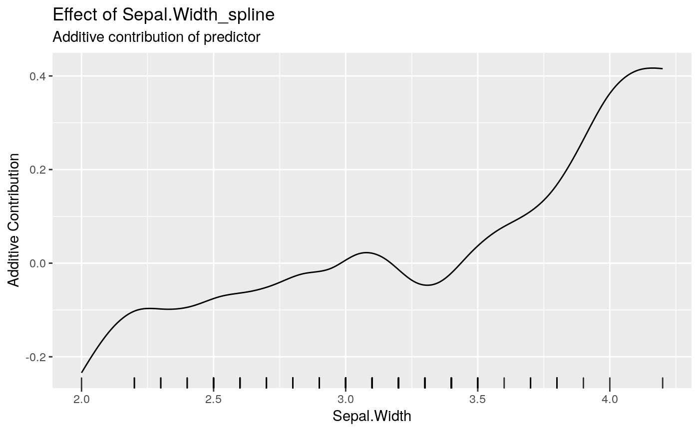
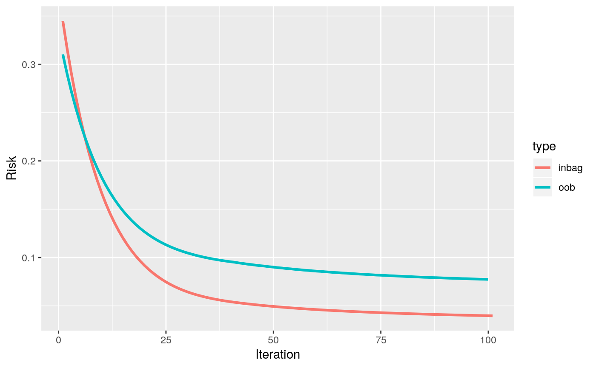

boostSplines.RdThis wrapper function automatically initialize the model by adding all numerical
features as spline base-learner. Categorical features are dummy encoded and inserted
using another linear base-learners without intercept. The function boostSplines
does also train the model.
boostSplines(data, target, optimizer = OptimizerCoordinateDescent$new(), loss, learning.rate = 0.05, iterations = 100, trace = -1, degree = 3, n.knots = 20, penalty = 2, differences = 2, data.source = InMemoryData, data.target = InMemoryData, oob.fraction = NULL)
| data | [ |
|---|---|
| target | [ |
| optimizer | [ |
| loss | [ |
| learning.rate | [ |
| iterations | [ |
| trace | [ |
| degree | [ |
| n.knots | [ |
| penalty | [ |
| differences | [ |
| data.source | [ |
| data.target | [ |
| oob.fraction | [ |
A model of the Compboost class. This model is an R6 object
which can be used for retraining, predicting, plotting, and anything described in
?Compboost.
The returned object is an object of the Compboost class. This object can be
used for further analyses (see ?Compboost for details).
mod = boostSplines(data = iris, target = "Sepal.Length", loss = LossQuadratic$new(), oob.fraction = 0.3)#> Warning: New data for 'Petal.Length' contains values that are out of range. Values smaller than 1.200000 are set to 1.200000.#> 1/100 risk = 0.32 oob_risk = 0.31#> Warning: New data for 'Petal.Length' contains values that are out of range. Values smaller than 1.200000 are set to 1.200000.#> 2/100 risk = 0.29 oob_risk = 0.29#> Warning: New data for 'Petal.Length' contains values that are out of range. Values smaller than 1.200000 are set to 1.200000.#> Warning: New data for 'Petal.Length' contains values that are out of range. Values smaller than 1.200000 are set to 1.200000.#> 4/100 risk = 0.25 oob_risk = 0.26#> Warning: New data for 'Petal.Length' contains values that are out of range. Values smaller than 1.200000 are set to 1.200000.#> Warning: New data for 'Petal.Length' contains values that are out of range. Values smaller than 1.200000 are set to 1.200000.#> 6/100 risk = 0.21 oob_risk = 0.23#> Warning: New data for 'Petal.Length' contains values that are out of range. Values smaller than 1.200000 are set to 1.200000.#> Warning: New data for 'Petal.Length' contains values that are out of range. Values smaller than 1.200000 are set to 1.200000.#> 8/100 risk = 0.18 oob_risk = 0.2#> Warning: New data for 'Petal.Length' contains values that are out of range. Values smaller than 1.200000 are set to 1.200000.#> Warning: New data for 'Petal.Length' contains values that are out of range. Values smaller than 1.200000 are set to 1.200000.#> 10/100 risk = 0.16 oob_risk = 0.18#> Warning: New data for 'Petal.Length' contains values that are out of range. Values smaller than 1.200000 are set to 1.200000.#> Warning: New data for 'Petal.Length' contains values that are out of range. Values smaller than 1.200000 are set to 1.200000.#> 12/100 risk = 0.14 oob_risk = 0.17#> Warning: New data for 'Petal.Length' contains values that are out of range. Values smaller than 1.200000 are set to 1.200000.#> Warning: New data for 'Petal.Length' contains values that are out of range. Values smaller than 1.200000 are set to 1.200000.#> 14/100 risk = 0.12 oob_risk = 0.15#> Warning: New data for 'Petal.Length' contains values that are out of range. Values smaller than 1.200000 are set to 1.200000.#> Warning: New data for 'Petal.Length' contains values that are out of range. Values smaller than 1.200000 are set to 1.200000.#> 16/100 risk = 0.11 oob_risk = 0.14#> Warning: New data for 'Petal.Length' contains values that are out of range. Values smaller than 1.200000 are set to 1.200000.#> Warning: New data for 'Petal.Length' contains values that are out of range. Values smaller than 1.200000 are set to 1.200000.#> 18/100 risk = 0.096 oob_risk = 0.13#> Warning: New data for 'Petal.Length' contains values that are out of range. Values smaller than 1.200000 are set to 1.200000.#> Warning: New data for 'Petal.Length' contains values that are out of range. Values smaller than 1.200000 are set to 1.200000.#> 20/100 risk = 0.088 oob_risk = 0.13#> Warning: New data for 'Petal.Length' contains values that are out of range. Values smaller than 1.200000 are set to 1.200000.#> Warning: New data for 'Petal.Length' contains values that are out of range. Values smaller than 1.200000 are set to 1.200000.#> 22/100 risk = 0.081 oob_risk = 0.12#> Warning: New data for 'Petal.Length' contains values that are out of range. Values smaller than 1.200000 are set to 1.200000.#> Warning: New data for 'Petal.Length' contains values that are out of range. Values smaller than 1.200000 are set to 1.200000.#> 24/100 risk = 0.075 oob_risk = 0.12#> Warning: New data for 'Petal.Length' contains values that are out of range. Values smaller than 1.200000 are set to 1.200000.#> Warning: New data for 'Petal.Length' contains values that are out of range. Values smaller than 1.200000 are set to 1.200000.#> 26/100 risk = 0.07 oob_risk = 0.11#> Warning: New data for 'Petal.Length' contains values that are out of range. Values smaller than 1.200000 are set to 1.200000.#> Warning: New data for 'Petal.Length' contains values that are out of range. Values smaller than 1.200000 are set to 1.200000.#> 28/100 risk = 0.066 oob_risk = 0.11#> Warning: New data for 'Petal.Length' contains values that are out of range. Values smaller than 1.200000 are set to 1.200000.#> Warning: New data for 'Petal.Length' contains values that are out of range. Values smaller than 1.200000 are set to 1.200000.#> 30/100 risk = 0.063 oob_risk = 0.1#> Warning: New data for 'Petal.Length' contains values that are out of range. Values smaller than 1.200000 are set to 1.200000.#> 32/100 risk = 0.06 oob_risk = 0.1#> Warning: New data for 'Petal.Length' contains values that are out of range. Values smaller than 1.200000 are set to 1.200000.#> 34/100 risk = 0.058 oob_risk = 0.1#> Warning: New data for 'Petal.Length' contains values that are out of range. Values smaller than 1.200000 are set to 1.200000.#> 36/100 risk = 0.056 oob_risk = 0.098#> Warning: New data for 'Petal.Length' contains values that are out of range. Values smaller than 1.200000 are set to 1.200000.#> 38/100 risk = 0.055 oob_risk = 0.097#> Warning: New data for 'Petal.Length' contains values that are out of range. Values smaller than 1.200000 are set to 1.200000.#> 40/100 risk = 0.054 oob_risk = 0.096#> Warning: New data for 'Sepal.Width' contains values that are out of range. Values greater than 4.200000 are set to 4.200000.#> 42/100 risk = 0.053 oob_risk = 0.094#> Warning: New data for 'Petal.Length' contains values that are out of range. Values smaller than 1.200000 are set to 1.200000.#> Warning: New data for 'Sepal.Width' contains values that are out of range. Values greater than 4.200000 are set to 4.200000.#> 44/100 risk = 0.052 oob_risk = 0.093#> Warning: New data for 'Sepal.Width' contains values that are out of range. Values greater than 4.200000 are set to 4.200000.#> 46/100 risk = 0.051 oob_risk = 0.092#> Warning: New data for 'Petal.Length' contains values that are out of range. Values smaller than 1.200000 are set to 1.200000.#> 48/100 risk = 0.05 oob_risk = 0.091#> Warning: New data for 'Sepal.Width' contains values that are out of range. Values greater than 4.200000 are set to 4.200000.#> Warning: New data for 'Petal.Length' contains values that are out of range. Values smaller than 1.200000 are set to 1.200000.#> 50/100 risk = 0.049 oob_risk = 0.09#> Warning: New data for 'Sepal.Width' contains values that are out of range. Values greater than 4.200000 are set to 4.200000.#> 52/100 risk = 0.048 oob_risk = 0.089#> Warning: New data for 'Sepal.Width' contains values that are out of range. Values greater than 4.200000 are set to 4.200000.#> 54/100 risk = 0.048 oob_risk = 0.088#> Warning: New data for 'Sepal.Width' contains values that are out of range. Values greater than 4.200000 are set to 4.200000.#> Warning: New data for 'Petal.Length' contains values that are out of range. Values smaller than 1.200000 are set to 1.200000.#> 56/100 risk = 0.047 oob_risk = 0.087#> Warning: New data for 'Sepal.Width' contains values that are out of range. Values greater than 4.200000 are set to 4.200000.#> 58/100 risk = 0.046 oob_risk = 0.087#> Warning: New data for 'Sepal.Width' contains values that are out of range. Values greater than 4.200000 are set to 4.200000.#> Warning: New data for 'Petal.Length' contains values that are out of range. Values smaller than 1.200000 are set to 1.200000.#> 60/100 risk = 0.046 oob_risk = 0.086#> Warning: New data for 'Sepal.Width' contains values that are out of range. Values greater than 4.200000 are set to 4.200000.#> 62/100 risk = 0.045 oob_risk = 0.085#> Warning: New data for 'Petal.Length' contains values that are out of range. Values smaller than 1.200000 are set to 1.200000.#> Warning: New data for 'Sepal.Width' contains values that are out of range. Values greater than 4.200000 are set to 4.200000.#> 64/100 risk = 0.045 oob_risk = 0.085#> Warning: New data for 'Sepal.Width' contains values that are out of range. Values greater than 4.200000 are set to 4.200000.#> 66/100 risk = 0.044 oob_risk = 0.084#> Warning: New data for 'Sepal.Width' contains values that are out of range. Values greater than 4.200000 are set to 4.200000.#> 68/100 risk = 0.044 oob_risk = 0.083#> Warning: New data for 'Petal.Length' contains values that are out of range. Values smaller than 1.200000 are set to 1.200000.#> Warning: New data for 'Sepal.Width' contains values that are out of range. Values greater than 4.200000 are set to 4.200000.#> 70/100 risk = 0.044 oob_risk = 0.083#> Warning: New data for 'Sepal.Width' contains values that are out of range. Values greater than 4.200000 are set to 4.200000.#> 72/100 risk = 0.043 oob_risk = 0.082#> Warning: New data for 'Petal.Length' contains values that are out of range. Values smaller than 1.200000 are set to 1.200000.#> Warning: New data for 'Sepal.Width' contains values that are out of range. Values greater than 4.200000 are set to 4.200000.#> 74/100 risk = 0.043 oob_risk = 0.082#> Warning: New data for 'Petal.Length' contains values that are out of range. Values smaller than 1.200000 are set to 1.200000.#> 76/100 risk = 0.043 oob_risk = 0.081#> Warning: New data for 'Sepal.Width' contains values that are out of range. Values greater than 4.200000 are set to 4.200000.#> 78/100 risk = 0.042 oob_risk = 0.081#> Warning: New data for 'Sepal.Width' contains values that are out of range. Values greater than 4.200000 are set to 4.200000.#> Warning: New data for 'Petal.Length' contains values that are out of range. Values smaller than 1.200000 are set to 1.200000.#> 80/100 risk = 0.042 oob_risk = 0.081#> Warning: New data for 'Sepal.Width' contains values that are out of range. Values greater than 4.200000 are set to 4.200000.#> 82/100 risk = 0.042 oob_risk = 0.08#> Warning: New data for 'Sepal.Width' contains values that are out of range. Values greater than 4.200000 are set to 4.200000.#> Warning: New data for 'Petal.Length' contains values that are out of range. Values smaller than 1.200000 are set to 1.200000.#> 84/100 risk = 0.041 oob_risk = 0.08#> Warning: New data for 'Sepal.Width' contains values that are out of range. Values greater than 4.200000 are set to 4.200000.#> 86/100 risk = 0.041 oob_risk = 0.079#> Warning: New data for 'Sepal.Width' contains values that are out of range. Values greater than 4.200000 are set to 4.200000.#> 88/100 risk = 0.041 oob_risk = 0.079#> Warning: New data for 'Sepal.Width' contains values that are out of range. Values greater than 4.200000 are set to 4.200000.#> Warning: New data for 'Petal.Length' contains values that are out of range. Values smaller than 1.200000 are set to 1.200000.#> 90/100 risk = 0.041 oob_risk = 0.079#> Warning: New data for 'Sepal.Width' contains values that are out of range. Values greater than 4.200000 are set to 4.200000.#> 92/100 risk = 0.04 oob_risk = 0.079#> Warning: New data for 'Petal.Length' contains values that are out of range. Values smaller than 1.200000 are set to 1.200000.#> Warning: New data for 'Sepal.Width' contains values that are out of range. Values greater than 4.200000 are set to 4.200000.#> 94/100 risk = 0.04 oob_risk = 0.078#> Warning: New data for 'Sepal.Width' contains values that are out of range. Values greater than 4.200000 are set to 4.200000.#> 96/100 risk = 0.04 oob_risk = 0.078#> Warning: New data for 'Petal.Length' contains values that are out of range. Values smaller than 1.200000 are set to 1.200000.#> Warning: New data for 'Sepal.Width' contains values that are out of range. Values greater than 4.200000 are set to 4.200000.#> 98/100 risk = 0.04 oob_risk = 0.078#> Warning: New data for 'Sepal.Width' contains values that are out of range. Values greater than 4.200000 are set to 4.200000.#> 100/100 risk = 0.04 oob_risk = 0.077 #> #> #> Train 100 iterations in 0 Seconds. #> Final risk based on the train set: 0.04 #>mod$getBaselearnerNames()#> [1] "Sepal.Width_spline" "Petal.Length_spline" #> [3] "Petal.Width_spline" "Species_setosa_category" #> [5] "Species_versicolor_category" "Species_virginica_category"mod$getEstimatedCoef()#> $Petal.Length_spline #> [,1] #> [1,] -0.59957355 #> [2,] -0.75791196 #> [3,] -0.79557479 #> [4,] -0.64799397 #> [5,] -0.66935641 #> [6,] -0.71868380 #> [7,] -0.76062313 #> [8,] -0.77436673 #> [9,] -0.73842346 #> [10,] -0.59995128 #> [11,] -0.35741593 #> [12,] -0.13099998 #> [13,] 0.03927957 #> [14,] 0.26883946 #> [15,] 0.35079222 #> [16,] 0.31973025 #> [17,] 0.44118865 #> [18,] 0.52166876 #> [19,] 0.77125889 #> [20,] 1.11452029 #> [21,] 1.45474548 #> [22,] 1.61445516 #> [23,] 1.66491478 #> [24,] 1.70072447 #> #> $Petal.Width_spline #> [,1] #> [1,] -0.212711893 #> [2,] -0.149421392 #> [3,] -0.101164493 #> [4,] -0.082120316 #> [5,] -0.041055956 #> [6,] -0.018130115 #> [7,] -0.005097495 #> [8,] -0.000681514 #> [9,] -0.004171240 #> [10,] -0.014836040 #> [11,] -0.017748754 #> [12,] 0.029659092 #> [13,] 0.095784725 #> [14,] 0.072387060 #> [15,] 0.043132199 #> [16,] 0.027557844 #> [17,] -0.010165075 #> [18,] 0.013031902 #> [19,] 0.093250449 #> [20,] 0.182530621 #> [21,] 0.195226140 #> [22,] 0.093714213 #> [23,] -0.076363439 #> [24,] -0.256100886 #> #> $Sepal.Width_spline #> [,1] #> [1,] -0.33494419 #> [2,] -0.23289154 #> [3,] -0.13860143 #> [4,] -0.09086604 #> [5,] -0.10085724 #> [6,] -0.09539155 #> [7,] -0.06746007 #> [8,] -0.06337733 #> [9,] -0.04721796 #> [10,] -0.01705810 #> [11,] -0.02047327 #> [12,] 0.03059074 #> [13,] 0.01681589 #> [14,] -0.04966087 #> [15,] -0.05037138 #> [16,] 0.02191022 #> [17,] 0.07288378 #> [18,] 0.09861505 #> [19,] 0.14488442 #> [20,] 0.24530993 #> [21,] 0.36640673 #> [22,] 0.41884167 #> [23,] 0.41698764 #> [24,] 0.40608157 #> #> $offset #> [1] 5.878095 #>#> #> Petal.Length_spline Petal.Width_spline Sepal.Width_spline #> 49 23 28mod$predict()#> [,1] #> [1,] 5.001165 #> [2,] 4.988658 #> [3,] 5.030928 #> [4,] 5.073039 #> [5,] 5.397120 #> [6,] 4.998618 #> [7,] 4.988551 #> [8,] 4.977101 #> [9,] 4.989465 #> [10,] 5.120490 #> [11,] 4.959701 #> [12,] 5.392402 #> [13,] 5.056608 #> [14,] 5.272805 #> [15,] 5.202836 #> [16,] 5.058520 #> [17,] 5.173954 #> [18,] 5.113072 #> [19,] 5.083141 #> [20,] 5.049951 #> [21,] 5.075813 #> [22,] 5.046542 #> [23,] 4.973564 #> [24,] 5.029676 #> [25,] 5.042014 #> [26,] 5.410165 #> [27,] 5.030928 #> [28,] 5.016036 #> [29,] 5.039323 #> [30,] 4.988551 #> [31,] 5.064377 #> [32,] 4.929650 #> [33,] 5.325836 #> [34,] 5.026219 #> [35,] 5.211580 #> [36,] 4.980890 #> [37,] 4.947829 #> [38,] 6.276260 #> [39,] 6.196010 #> [40,] 5.141995 #> [41,] 6.228368 #> [42,] 5.148447 #> [43,] 6.009030 #> [44,] 5.683102 #> [45,] 6.272471 #> [46,] 6.216285 #> [47,] 5.638163 #> [48,] 6.201189 #> [49,] 5.830074 #> [50,] 6.203831 #> [51,] 6.190470 #> [52,] 6.057773 #> [53,] 6.176389 #> [54,] 6.267602 #> [55,] 6.253591 #> [56,] 6.192221 #> [57,] 5.318835 #> [58,] 5.459978 #> [59,] 5.688753 #> [60,] 6.239786 #> [61,] 6.166692 #> [62,] 6.292692 #> [63,] 6.049980 #> [64,] 5.934198 #> [65,] 6.274502 #> [66,] 5.747470 #> [67,] 5.947546 #> [68,] 5.957418 #> [69,] 5.981515 #> [70,] 5.042088 #> [71,] 6.759716 #> [72,] 6.905700 #> [73,] 6.450083 #> [74,] 7.605624 #> [75,] 7.230165 #> [76,] 6.575243 #> [77,] 6.298877 #> [78,] 6.282742 #> [79,] 6.211686 #> [80,] 6.470739 #> [81,] 7.849780 #> [82,] 7.638411 #> [83,] 6.185503 #> [84,] 6.249415 #> [85,] 7.533184 #> [86,] 6.639024 #> [87,] 6.185631 #> [88,] 6.573452 #> [89,] 6.698681 #> [90,] 6.992133 #> [91,] 7.572166 #> [92,] 6.283978 #> [93,] 6.485843 #> [94,] 6.509996 #> [95,] 6.426461 #> [96,] 6.221465 #> [97,] 6.517144 #> [98,] 6.552374 #> [99,] 6.431530 #> [100,] 6.208481 #> [101,] 6.910580 #> [102,] 6.424567 #> [103,] 6.453170 #> [104,] 6.159048 #> [105,] 6.355569mod$plotInbagVsOobRisk()